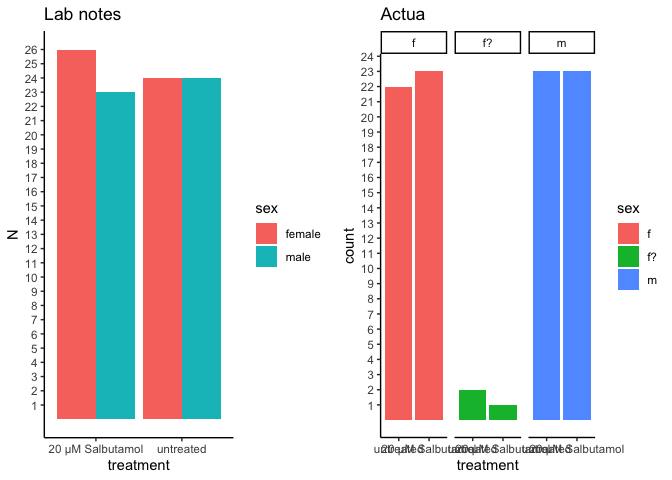
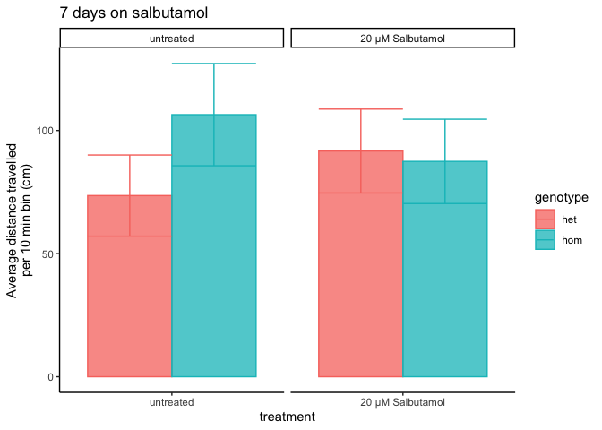

fullexp1
Karissa Barthelson
2023-07-13
Last updated: 2023-08-24
Checks: 6 1
Knit directory: 2023_MPSIII_salbutamol/
This reproducible R Markdown analysis was created with workflowr (version 1.7.0). The Checks tab describes the reproducibility checks that were applied when the results were created. The Past versions tab lists the development history.
The R Markdown file has unstaged changes. To know which version of the R Markdown file created these results, you’ll want to first commit it to the Git repo. If you’re still working on the analysis, you can ignore this warning. When you’re finished, you can run wflow_publish to commit the R Markdown file and build the HTML.
Great job! The global environment was empty. Objects defined in the global environment can affect the analysis in your R Markdown file in unknown ways. For reproduciblity it’s best to always run the code in an empty environment.
The command set.seed(20230614) was run prior to running the code in the R Markdown file. Setting a seed ensures that any results that rely on randomness, e.g. subsampling or permutations, are reproducible.
Great job! Recording the operating system, R version, and package versions is critical for reproducibility.
Nice! There were no cached chunks for this analysis, so you can be confident that you successfully produced the results during this run.
Great job! Using relative paths to the files within your workflowr project makes it easier to run your code on other machines.
Great! You are using Git for version control. Tracking code development and connecting the code version to the results is critical for reproducibility.
The results in this page were generated with repository version e7fb2e6. See the Past versions tab to see a history of the changes made to the R Markdown and HTML files.
Note that you need to be careful to ensure that all relevant files for the analysis have been committed to Git prior to generating the results (you can use wflow_publish or wflow_git_commit). workflowr only checks the R Markdown file, but you know if there are other scripts or data files that it depends on. Below is the status of the Git repository when the results were generated:
Ignored files:
Ignored: .DS_Store
Ignored: .Rhistory
Ignored: .Rproj.user/
Ignored: code/.DS_Store
Ignored: data/.DS_Store
Ignored: data/exp1.2/.DS_Store
Ignored: data/exp1.2/raw_data/.DS_Store
Ignored: data/exp1.2/raw_data/distances/.DS_Store
Ignored: data/exp1.2/raw_data/zones/.DS_Store
Ignored: data/exp1.2/videos/
Ignored: data/exp1/.DS_Store
Ignored: data/exp1/processed_data/.DS_Store
Ignored: data/exp1/raw_data/.DS_Store
Ignored: data/exp1/videos/
Ignored: data/pilot/.DS_Store
Ignored: data/pilot/14 days/.DS_Store
Ignored: data/pilot/14 days/raw_data/.DS_Store
Ignored: data/pilot/7 days/.DS_Store
Ignored: data/pilot/7 days/raw_data/.DS_Store
Ignored: data/pilot/7 days/raw_data/distances/.DS_Store
Ignored: data/pilot/7 days/tracking_videos/
Untracked files:
Untracked: analysis/fullexp1-2.rmd
Untracked: code/experiment 1.2/
Untracked: code/experiment 1/distances_exp1.2.R
Untracked: code/plotMaking.R
Untracked: data/R_objects/
Untracked: data/exp1.2/processed_data/
Untracked: data/exp1.2/~$2023_Aug18_salbutamolexp1_2_meta.xlsx
Untracked: output/plots/
Unstaged changes:
Modified: .gitignore
Modified: analysis/fullexp1.rmd
Modified: data/exp1.2/2023_Aug18_salbutamolexp1_2_meta.xlsx
Modified: data/exp1.2/metadata_withGenotype.rds
Deleted: data/exp1.2/raw_data/distances/ymaze_inLT-20230818T102151-data_totals.csv
Deleted: data/exp1.2/raw_data/distances/ymazeinLT-20230818T095428-data_totals.csv
Deleted: data/exp1.2/raw_data/distances/ymazeinLT-20230818T095643-data_totals.csv
Deleted: data/exp1.2/raw_data/distances/ymazeinLT-20230818T164213-data_totals.csv
Deleted: data/exp1.2/raw_data/distances/ymazeinLT-20230818T164447-data_totals.csv
Deleted: data/exp1.2/raw_data/zones/ymaze8-20230818T095443.csv
Deleted: data/exp1.2/raw_data/zones/ymaze_inLT-20230818T102150.csv
Deleted: data/exp1.2/raw_data/zones/ymazeinLT-20230818T095427.csv
Deleted: data/exp1.2/raw_data/zones/ymazeinLT-20230818T095643.csv
Deleted: data/exp1.2/raw_data/zones/ymazeinLT-20230818T164213.csv
Deleted: data/exp1.2/raw_data/zones/ymazeinLT-20230818T164446.csv
Note that any generated files, e.g. HTML, png, CSS, etc., are not included in this status report because it is ok for generated content to have uncommitted changes.
These are the previous versions of the repository in which changes were made to the R Markdown (analysis/fullexp1.rmd) and HTML (docs/fullexp1.html) files. If you’ve configured a remote Git repository (see ?wflow_git_remote), click on the hyperlinks in the table below to view the files as they were in that past version.
| File | Version | Author | Date | Message |
|---|---|---|---|---|
| Rmd | e7fb2e6 | Karissa Barthelson | 2023-08-23 | addded salbutamol exp 1.2 data + genotyping analsysis |
| html | e7fb2e6 | Karissa Barthelson | 2023-08-23 | addded salbutamol exp 1.2 data + genotyping analsysis |
library(tidyverse)
library(readxl)
library(here)
library(magrittr)
library(scales)
library(readxl)
library(ggpubr)
library(ggeasy)
library(ggfortify)
library(ggbeeswarm)
library(ggforce)
library(ggrepel)
library(kableExtra)
# stat analysis
library(broom)
library(lme4)
library(performance)
library(car)
library(emmeans)
library(glmmTMB)
library(MASS)
# set the default theme for ggplot as theme_bw
theme_set(theme_classic())Introduction
In this experiment, i treated equal roughly numbers of male and female fish with and without 20 uM of salbutamol. Then, they were subjected to the FMP ymaze test. Then i genotyped the fish.
here, i will analyse the behaviour data
genotyping summary
The genotying data was properly analysed in a seperate R script code / experiment 1/ exp1_genotypingMeltCurve.R. However, the results are shown here.
read_rds("data/exp1/genotyping_data/meltcurveWithGenotypes.rds") %>%
ggplot(aes(x = Temperature, y = dF)) +
geom_line(aes(group = Position,
colour = genotype)) +
scale_x_continuous(limits = c(78,86),
breaks = seq(70,90)) +
scale_y_continuous(labels = comma,
limits = c(0, 250000))
| Version | Author | Date |
|---|---|---|
| e7fb2e6 | Karissa Barthelson | 2023-08-23 |
metadata summary
The following plot shows the number of fish per genotype, treatment and sex.
meta <- readRDS("data/exp1/metadata_withGenotype.rds")meta %>%
ggplot(aes(x = treatment, fill = genotype)) +
geom_bar(position = "dodge") +
# facet_wrap(~sex) +
scale_y_continuous(breaks = seq(1,26))
| Version | Author | Date |
|---|---|---|
| e7fb2e6 | Karissa Barthelson | 2023-08-23 |
A couple of fish I wasnt sure about the sex.
Accoring to my lab notes, the following table was how many fish I treated
ggarrange(
tibble(
sex = c("male", "male", "female", "female"),
treatment = c("untreated","20 µM Salbutamol" ,
"untreated", "20 µM Salbutamol"),
N = c(24, 23, 24, 26)
) %>%
ggplot(aes(x = treatment, y = N, fill = sex)) +
geom_col(position = "dodge")+
scale_y_continuous(breaks = seq(1,26)) +
ggtitle("Lab notes"),
meta %>%
ggplot(aes(x = treatment, fill = sex)) +
geom_bar(position = "dodge") +
facet_wrap(~sex) +
ggtitle("Actua") +
scale_y_continuous(breaks = seq(1,26))
)
| Version | Author | Date |
|---|---|---|
| e7fb2e6 | Karissa Barthelson | 2023-08-23 |
I think I will just omit them for now.
# save the fish_ids for later
fish2omit <- meta %>%
dplyr::filter(sex == "f?") %>%
.$fish_idbehavaiour data analysis
read in the pre-processed data
final_data <- read_csv("data/exp1/processed_data/final_output.csv") %>%
dplyr::select(-1) %>%
mutate(fish_id = as.character(fish_id)) %>%
left_join(meta) %>%
dplyr::filter(genotype %in% c("het", "hom"),
sex %in% c("m", "f"))
# make an object which converts the final data to long format. for easier plotting in ggplot
final_data_long <- final_data %>%
gather(key = "tetras", value = "Count", # convert to long format
grep("[L|R]{4}",
colnames(.))
)
# also make an object which sums the tetragrams over the hour
final_data_summedoverbins <- final_data %>%
gather(key = "tetras", value = "Count", # convert to long format
grep("[L|R]{4}", # select the columns which contain a L or a R four times
colnames(.))
) %>%
group_by(fish_id, tetras) %>%
mutate(x = sum(Count)) %>% # sum the tetragram counts per fish_id
dplyr::select(colnames(meta), tetras, x) %>%
unique
distancess <- read_rds("data/exp1/processed_data/distanceDataexp1.rds")
# 6 min bins
bin_df <- tibble(
# 10 min buins
bins6 = c(rep(1, 600),
rep(2, 600),
rep(3, 600),
rep(4, 600),
rep(5, 600),
rep(6, 600)
) %>% as.factor(),
BIN_NUM = distancess$BIN_NUM %>% unique)assess proper tracking
First need to have a look at whether tracking worked nicely for these fish. To do this, I will import the distance data and plot it out. I also have the videos saved to double check anything strange.
distancess %>%
left_join(bin_df) %>%
group_by(fish_id, bins6) %>%
mutate(total_distance = sum(TOTAL_DISTANCE_IN_ZONE)) %>%
dplyr::distinct(bins6, .keep_all = T) %>%
dplyr::filter(genotype %in% c('het', 'hom'),
sex %in% c("m", "f")) %>%
ggplot(aes(x = bins6, y = total_distance)) +
geom_jitter(alpha = 0.75) +
geom_boxplot(aes(x = bins6),
fill = NA) +
geom_label(aes(label = fish_id),
data = . %>%
dplyr::filter(total_distance > 25000))
| Version | Author | Date |
|---|---|---|
| e7fb2e6 | Karissa Barthelson | 2023-08-23 |
fish2omit2 <- c(fish2omit,
meta %>%
dplyr::filter(grepl(Comment, pattern = "tracking")) %>%
.$fish_id,
71
)distancess %>%
left_join(bin_df) %>%
group_by(fish_id, bins6) %>%
mutate(total_distance = sum(TOTAL_DISTANCE_IN_ZONE)) %>%
dplyr::distinct(bins6, .keep_all = T) %>%
dplyr::filter(genotype %in% c('het', 'hom'),
sex %in% c("m", "f")) %>%
dplyr::filter(!fish_id %in% fish2omit2 ) %>%
ggplot(aes(x = bins6, y = total_distance)) +
geom_jitter(alpha = 0.75) +
geom_boxplot(aes(x = bins6),
fill = NA) +
geom_label(aes(label = fish_id),
data = . %>%
dplyr::filter(total_distance > 25000))
| Version | Author | Date |
|---|---|---|
| e7fb2e6 | Karissa Barthelson | 2023-08-23 |
omit problmeatic fish
fish2omit3 <- c(
fish2omit2,
meta %>%
dplyr::filter((genotype %>% is.na)) %>% .$fish_id,
92
)
distancess %<>%
dplyr::filter(!(fish_id %in% fish2omit3))
final_data %<>%
dplyr::filter(!(fish_id %in% fish2omit3))
final_data_long %<>%
dplyr::filter(!(fish_id %in% fish2omit3))
final_data_summedoverbins %<>%
dplyr::filter(!(fish_id %in% fish2omit3))trial effects
Fish were tested across a whole day (from ~10am to 5pm) so circadian differences could be present here. Plot out total distance by trial. Trial specific effects are seen, but no clear pattern.
distancess %>%
left_join(bin_df) %>%
group_by(fish_id) %>%
mutate(total_distance = sum(TOTAL_DISTANCE_IN_ZONE)) %>%
dplyr::distinct(fish_id, .keep_all = T) %>%
dplyr::filter(!is.na(behavBatch)) %>%
ggplot(aes(y = total_distance,
x = bins6)) +
geom_jitter(alpha = 0.75) +
geom_boxplot(fill = NA) +
scale_y_continuous(labels = comma) +
facet_wrap(~behavBatch, scales = "free_x", nrow = 1)
| Version | Author | Date |
|---|---|---|
| e7fb2e6 | Karissa Barthelson | 2023-08-23 |
total distance travelled
fit.dists <-
distancess %>%
left_join(bin_df) %>%
group_by(fish_id, bins6) %>%
mutate(total_distance = sum(TOTAL_DISTANCE_IN_ZONE)) %>%
dplyr::distinct(bins6, .keep_all = T) %>%
lmer(total_distance ~ (genotype*treatment*bins6*sex) + (1|behavBatch) +(1|fish_id),
data = .)
# check assumptions
# all look ok
check_model(fit.dists)
| Version | Author | Date |
|---|---|---|
| e7fb2e6 | Karissa Barthelson | 2023-08-23 |
an <- Anova(fit.dists)
emmeans(fit.dists, list(pairwise ~ genotype * treatment * sex), adjust = "tukey")$`emmeans of genotype, treatment, sex`
genotype treatment sex emmean SE df lower.CL upper.CL
het untreated f 6414 1300 71.5 3823 9004
hom untreated f 10519 1123 70.8 8279 12759
het 20 µM Salbutamol f 8939 1250 57.7 6436 11442
hom 20 µM Salbutamol f 9944 1173 72.5 7607 12281
het untreated m 8300 1010 63.2 6281 10319
hom untreated m 10769 1745 74.9 7292 14246
het 20 µM Salbutamol m 9393 1186 67.1 7025 11760
hom 20 µM Salbutamol m 7548 1246 65.8 5060 10036
Results are averaged over the levels of: bins6
Degrees-of-freedom method: kenward-roger
Confidence level used: 0.95
$`pairwise differences of genotype, treatment, sex`
1 estimate SE df t.ratio
het untreated f - hom untreated f -4105 1733 75.0 -2.369
het untreated f - het 20 µM Salbutamol f -2525 1776 68.5 -1.422
het untreated f - hom 20 µM Salbutamol f -3530 1758 74.8 -2.008
het untreated f - het untreated m -1886 1650 74.7 -1.143
het untreated f - hom untreated m -4355 2182 75.0 -1.996
het untreated f - het 20 µM Salbutamol m -2979 1759 75.0 -1.694
het untreated f - hom 20 µM Salbutamol m -1134 1819 73.2 -0.623
hom untreated f - het 20 µM Salbutamol f 1579 1689 73.7 0.935
hom untreated f - hom 20 µM Salbutamol f 575 1617 69.7 0.355
hom untreated f - het untreated m 2219 1520 74.8 1.460
hom untreated f - hom untreated m -250 2073 71.8 -0.121
hom untreated f - het 20 µM Salbutamol m 1126 1636 74.0 0.688
hom untreated f - hom 20 µM Salbutamol m 2971 1679 74.5 1.770
het 20 µM Salbutamol f - hom 20 µM Salbutamol f -1005 1724 73.8 -0.583
het 20 µM Salbutamol f - het untreated m 639 1616 72.4 0.396
het 20 µM Salbutamol f - hom untreated m -1830 2162 73.5 -0.846
het 20 µM Salbutamol f - het 20 µM Salbutamol m -453 1745 67.8 -0.260
het 20 µM Salbutamol f - hom 20 µM Salbutamol m 1392 1782 67.6 0.781
hom 20 µM Salbutamol f - het untreated m 1644 1533 68.5 1.072
hom 20 µM Salbutamol f - hom untreated m -825 2111 73.6 -0.391
hom 20 µM Salbutamol f - het 20 µM Salbutamol m 551 1666 72.9 0.331
hom 20 µM Salbutamol f - hom 20 µM Salbutamol m 2396 1714 74.5 1.398
het untreated m - hom untreated m -2469 2026 74.4 -1.219
het untreated m - het 20 µM Salbutamol m -1093 1560 74.5 -0.700
het untreated m - hom 20 µM Salbutamol m 752 1595 73.2 0.472
hom untreated m - het 20 µM Salbutamol m 1376 2103 72.2 0.654
hom untreated m - hom 20 µM Salbutamol m 3221 2133 72.1 1.510
het 20 µM Salbutamol m - hom 20 µM Salbutamol m 1845 1732 74.9 1.065
p.value
0.2716
0.8439
0.4838
0.9449
0.4916
0.6912
0.9984
0.9815
1.0000
0.8257
1.0000
0.9971
0.6420
0.9990
0.9999
0.9897
1.0000
0.9936
0.9604
0.9999
1.0000
0.8554
0.9239
0.9967
0.9997
0.9979
0.7996
0.9620
Results are averaged over the levels of: bins6
Degrees-of-freedom method: kenward-roger
P value adjustment: tukey method for comparing a family of 8 estimates # geno treat sex
print(emmeans(fit.dists, ~ genotype * treatment * sex), type = "response") %>%
as_tibble() %>%
ggplot(aes(x = treatment, y = emmean, colour = genotype)) +
geom_col(aes(fill = genotype),
alpha = 0.75,
width = 0.75,
position = position_dodge(width = 0.75)) +
geom_errorbar(aes(ymin = lower.CL, ymax = upper.CL),
width = 0.5,
position = position_dodge(width = 0.75)) +
facet_wrap(~sex, nrow = 1) genotype treatment sex emmean SE df lower.CL upper.CL
het untreated f 6414 1300 71.5 3823 9004
hom untreated f 10519 1123 70.8 8279 12759
het 20 µM Salbutamol f 8939 1250 57.7 6436 11442
hom 20 µM Salbutamol f 9944 1173 72.5 7607 12281
het untreated m 8300 1010 63.2 6281 10319
hom untreated m 10769 1745 74.9 7292 14246
het 20 µM Salbutamol m 9393 1186 67.1 7025 11760
hom 20 µM Salbutamol m 7548 1246 65.8 5060 10036
Results are averaged over the levels of: bins6
Degrees-of-freedom method: kenward-roger
Confidence level used: 0.95
| Version | Author | Date |
|---|---|---|
| e7fb2e6 | Karissa Barthelson | 2023-08-23 |
# geno treat
print(emmeans(fit.dists, ~ genotype * treatment), type = "response") %>%
as_tibble() %>%
ggplot(aes(x = treatment, y = emmean/100, colour = genotype)) +
geom_col(aes(fill = genotype),
alpha = 0.75,
position = position_dodge()) +
geom_errorbar(aes(ymin = lower.CL/100, ymax = upper.CL/100),
position = position_dodge()) +
facet_wrap(~treatment, nrow = 1, scales = "free_x") +
labs(title = "7 days on salbutamol",
y = "Average distance travelled\nper 10 min bin (cm)") genotype treatment emmean SE df lower.CL upper.CL
het untreated 7357 821 52.2 5709 9004
hom untreated 10644 1039 64.8 8568 12719
het 20 µM Salbutamol 9166 851 56.4 7462 10870
hom 20 µM Salbutamol 8746 854 52.5 7033 10459
Results are averaged over the levels of: bins6, sex
Degrees-of-freedom method: kenward-roger
Confidence level used: 0.95 
| Version | Author | Date |
|---|---|---|
| e7fb2e6 | Karissa Barthelson | 2023-08-23 |
# geno treat bin
print(emmeans(fit.dists, ~ genotype * treatment * bins6 * sex),
type = "response") %>%
as_tibble() %>%
mutate(group = paste0(genotype, "_",
treatment, "_",
sex),
genotreat = paste0(genotype, "_", treatment)) %>%
dplyr::filter(genotreat != "het_20 µM Salbutamol") %>%
ggplot(aes(x = bins6, y = emmean, colour = genotreat)) +
geom_point(aes(fill =group),
alpha = 0.75,
position = position_dodge(width = 0.75)) +
geom_errorbar(aes(ymin = lower.CL, ymax = upper.CL),
position = position_dodge(0.75)) +
geom_line(aes(group = group),
position = position_dodge(0.75),
show.legend = F) +
facet_wrap(~sex,
scales = "free_x") genotype treatment bins6 sex emmean SE df lower.CL upper.CL
het untreated 1 f 10440 1492 124 7486 13394
hom untreated 1 f 12414 1291 122 9860 14969
het 20 µM Salbutamol 1 f 13600 1431 100 10761 16439
hom 20 µM Salbutamol 1 f 14074 1347 125 11407 16740
het untreated 2 f 6933 1492 124 3979 9887
hom untreated 2 f 10445 1291 122 7890 12999
het 20 µM Salbutamol 2 f 9636 1431 100 6798 12475
hom 20 µM Salbutamol 2 f 10039 1347 125 7373 12706
het untreated 3 f 6283 1492 124 3329 9237
hom untreated 3 f 11479 1291 122 8924 14033
het 20 µM Salbutamol 3 f 8545 1431 100 5707 11384
hom 20 µM Salbutamol 3 f 9573 1347 125 6907 12239
het untreated 4 f 5249 1492 124 2295 8203
hom untreated 4 f 10674 1291 122 8119 13229
het 20 µM Salbutamol 4 f 7838 1431 100 4999 10676
hom 20 µM Salbutamol 4 f 9763 1347 125 7097 12430
het untreated 5 f 4742 1492 124 1789 7696
hom untreated 5 f 9134 1291 122 6579 11688
het 20 µM Salbutamol 5 f 7110 1431 100 4271 9949
hom 20 µM Salbutamol 5 f 8536 1347 125 5870 11202
het untreated 6 f 4834 1492 124 1880 7788
hom untreated 6 f 8966 1291 122 6411 11521
het 20 µM Salbutamol 6 f 6906 1431 100 4067 9744
hom 20 µM Salbutamol 6 f 7678 1347 125 5012 10345
het untreated 1 m 14428 1159 110 12130 16725
hom untreated 1 m 16920 2004 129 12955 20884
het 20 µM Salbutamol 1 m 13902 1359 116 11210 16593
hom 20 µM Salbutamol 1 m 12491 1427 114 9664 15318
het untreated 2 m 9459 1159 110 7162 11757
hom untreated 2 m 13516 2004 129 9551 17480
het 20 µM Salbutamol 2 m 9946 1359 116 7255 12638
hom 20 µM Salbutamol 2 m 7699 1427 114 4872 10527
het untreated 3 m 7193 1159 110 4895 9490
hom untreated 3 m 10293 2004 129 6329 14258
het 20 µM Salbutamol 3 m 9240 1359 116 6549 11932
hom 20 µM Salbutamol 3 m 6654 1427 114 3827 9482
het untreated 4 m 6514 1159 110 4217 8812
hom untreated 4 m 7647 2004 129 3682 11611
het 20 µM Salbutamol 4 m 7434 1359 116 4742 10125
hom 20 µM Salbutamol 4 m 6742 1427 114 3914 9569
het untreated 5 m 6225 1159 110 3928 8523
hom untreated 5 m 7984 2004 129 4019 11948
het 20 µM Salbutamol 5 m 7648 1359 116 4956 10340
hom 20 µM Salbutamol 5 m 6349 1427 114 3521 9176
het untreated 6 m 5980 1159 110 3682 8277
hom untreated 6 m 8253 2004 129 4288 12217
het 20 µM Salbutamol 6 m 8185 1359 116 5493 10877
hom 20 µM Salbutamol 6 m 5350 1427 114 2523 8178
Degrees-of-freedom method: kenward-roger
Confidence level used: 0.95
| Version | Author | Date |
|---|---|---|
| e7fb2e6 | Karissa Barthelson | 2023-08-23 |
The genotype * treatment effect is significnat!!!
check for handedness
Fontana et al. (https://doi.org/10.1007/s10071-019-01296-9, Matt Parker’s group) showed that fish sometimes show a behavioural lateralisation (i.e. handedness). If fish show this, then they would perform less alternation tetragrams not due to working memory. The plot below circles each of the L_R bias groups.
# make the LR bias object
LR_Bias <- final_data %>%
dplyr::select(L, R, total_turns, fish_id) %>%
group_by(fish_id) %>%
mutate(L = sum(L),
R = sum(R),
total_turns = sum(total_turns),
L_R_bias = case_when( #consider more than 60% of the time performing a left or right turn to be a bias
L/total_turns > 0.6 ~ "Left",
R/total_turns > 0.6 ~ "Right",
TRUE ~ "Neither"
)) %>%
dplyr::select(fish_id, L_R_bias) %>%
unique() %>%
mutate(L_R_bias = factor(L_R_bias,
levels = c("Neither", "Left", "Right"))
)The overall propotions of fish showing left, right or no bias is simialr across the 4 experimental groups.
final_data %>%
left_join(LR_Bias) %>%
group_by(fish_id) %>%
mutate(L = sum(L),
R = sum(R),
total_turns = sum(total_turns),
genotreat = paste0(genotype, "_", treatment)
) %>%
ggplot(aes(x = genotreat, fill = L_R_bias )) +
geom_bar()
| Version | Author | Date |
|---|---|---|
| e7fb2e6 | Karissa Barthelson | 2023-08-23 |
# add the LR bias object to final data
final_data %<>%
left_join(LR_Bias) test for changes to alternation
Cleal et al. showed that zebrafish naturally perform more of the alternation tetragrams (LRLR and RLRL) in a Y-maze. Here, we actually see more reps that alts. I will look at this more closely later.
final_data_summedoverbins %>%
dplyr::distinct(x, .keep_all = T) %>%
ggplot(aes(x = tetras, y = x)) +
geom_jitter(aes(colour = tetras,
shape = sex)) +
geom_boxplot(outlier.shape = NA,
fill = NA
) +
scale_fill_viridis_d() +
labs(y = "Number of tetragrams",
colour = "Tetragram",
x = "Tetragram")+
theme(legend.position = "bottom") +
ggtitle("Total number of 16 possible tetragrams performed by zebrafish in a Y-maze\nduring a 1 hour search period")
| Version | Author | Date |
|---|---|---|
| e7fb2e6 | Karissa Barthelson | 2023-08-23 |
# geom_label_repel(aes(label = fish_id),
# data = . %>%
# dplyr::filter(x > 500))We can also overlay the genotype boxplots as shown below. Looks like the heterozyous and homozygous fish perform more alternations than the WT fish. I will look into this more later in the analysis
final_data_summedoverbins %>%
ggplot(aes(x = tetras, y = x)) +
geom_jitter(aes(colour = tetras,
shape = sex)) +
geom_boxplot(outlier.shape = NA,
aes(fill = genotype),
alpha = 0.5,
) +
scale_fill_viridis_d() +
labs(y = "Number of tetragrams",
colour = "Tetragram",
x = "Tetragram")+
theme(legend.position = "bottom") +
facet_wrap(~treatment, ncol = 1) +
easy_rotate_x_labels(angle = -45) +
annotate("rect", # add some boxes aeround the alts
xmin = 5.5, xmax = 6.5,
ymin = -1, ymax = 200,
alpha = 0, color= "red") +
annotate("rect",
xmin = 10.5, xmax = 11.5,
ymin = -1, ymax = 200,
alpha = 0, color= "red") +
ggtitle("Total number of 16 possible tetragrams performed by zebrafish in a Y-maze\nduring a 1 hour search period") 
| Version | Author | Date |
|---|---|---|
| e7fb2e6 | Karissa Barthelson | 2023-08-23 |
The alternation tetragrams are the tetragram of interest (the measure of working memory). Below indicates the number of tetragrams performed by zerbafish across the 6 x 10 min blocks of the hour they spent in the maze.
final_data_long %>%
dplyr::distinct(fish_id, bin, .keep_all = T) %>%
mutate(binforvis = case_when(
bin == 1 ~ "0-10 mins",
bin == 2 ~ "10-20 mins",
bin == 3 ~ "20-30 mins",
bin == 4 ~ "30-40 mins",
bin == 5 ~ "40-50 mins",
bin == 6 ~ "50-60 mins"
)) %>%
ggplot(aes(x = treatment, y = alts)) +
geom_boxplot(outlier.shape = NA,
aes(fill = genotype),
alpha = 0.5) +
geom_point(aes(colour = genotype),
position = position_jitterdodge()) +
facet_wrap(~binforvis, nrow = 1) +
theme(axis.text.x = element_text(angle = 45, hjust = 1, vjust = 1),
legend.position = "bottom") +
ylab("Frequency of alternation tetragrams (LRLR + RLRL)") +
scale_colour_viridis_d(end = 0.75) +
scale_fill_viridis_d(end = 0.75)
| Version | Author | Date |
|---|---|---|
| e7fb2e6 | Karissa Barthelson | 2023-08-23 |
We can also display this as the relative amount of alternation tetragrams performed by zebrafish in a 1 hour search period. This will control for how active each fish is. Again, fish 18 and 24 looks like outliers.
final_data_long %>%
dplyr::distinct(fish_id, bin, .keep_all = T) %>%
mutate(binforvis = case_when(
bin == 1 ~ "0-10 mins",
bin == 2 ~ "10-20 mins",
bin == 3 ~ "20-30 mins",
bin == 4 ~ "30-40 mins",
bin == 5 ~ "40-50 mins",
bin == 6 ~ "50-60 mins"
)) %>%
ggplot(aes(x = treatment, y = rel_alts)) +
geom_boxplot(outlier.shape = NA,
aes(fill = genotype),
alpha = 0.5) +
geom_point(aes(colour = genotype),
position = position_jitterdodge()) +
facet_wrap(~binforvis, nrow = 1) +
theme(axis.text.x = element_text(angle = 45, hjust = 1, vjust = 1),
legend.position = "bottom") +
ylab("Relative number of alternation tetragrams\n(LRLR + RLRL) / total_turns") +
scale_colour_viridis_d(end = 0.75) +
scale_fill_viridis_d(end = 0.75)  Finally, I will now test for alternation changes using a generalised linear mixed effect model (beta-binomial distribution). We use this because it is count data which is over-dispersed, and fixed and random effects are included. The link function is logit. No significant effects are observed on working memory. Only the
Finally, I will now test for alternation changes using a generalised linear mixed effect model (beta-binomial distribution). We use this because it is count data which is over-dispersed, and fixed and random effects are included. The link function is logit. No significant effects are observed on working memory. Only the L_R_bias term is significant, this is to be expected, as they would probably be performing more repitiions. The bin:Genotype effect is close (ish) to statistical significance. Meaning that this might have something there. but this does not take into account the Treatment group.
Note that I have ignored the effect of Sex here. We have never really seen a Sex effect in all of our ymaze analyses.
glm <-
final_data %>%
left_join(LR_Bias) %>%
mutate(
non_alts = total_turns - alts,
bin = as.factor(bin)
) %>%
glmmTMB(
cbind(alts, non_alts) ~ (bin + genotype + treatment + sex)^3 + L_R_bias + (1|behavBatch) + (1|fish_id),
family = betabinomial(),
data = .
)
Anova(glm) %>%
as.data.frame() %>%
dplyr::rename(pval = `Pr(>Chisq)`) %>%
kable() %>%
kable_styling(full_width = FALSE) %>%
row_spec(row = 4, bold = TRUE)| Chisq | Df | pval | |
|---|---|---|---|
| bin | 2.1239406 | 5 | 0.8317434 |
| genotype | 1.6076898 | 1 | 0.2048169 |
| treatment | 0.8914692 | 1 | 0.3450795 |
| sex | 0.0557759 | 1 | 0.8133014 |
| L_R_bias | 47.8351802 | 2 | 0.0000000 |
| bin:genotype | 7.6461448 | 5 | 0.1768458 |
| bin:treatment | 7.7064843 | 5 | 0.1731710 |
| bin:sex | 6.3545509 | 5 | 0.2732317 |
| genotype:treatment | 0.2128218 | 1 | 0.6445646 |
| genotype:sex | 0.0204934 | 1 | 0.8861676 |
| treatment:sex | 0.5170539 | 1 | 0.4721011 |
| bin:genotype:treatment | 0.9525005 | 5 | 0.9663052 |
| bin:genotype:sex | 2.0070627 | 5 | 0.8481669 |
| bin:treatment:sex | 2.6175653 | 5 | 0.7586947 |
| genotype:treatment:sex | 0.3779735 | 1 | 0.5386898 |
Vis
genotype x treatment
The effect of genotype x treatment is not too far off statistical significance (p = 0.17) and is trending towards a rescue.
print(emmeans(glm, ~ genotype * treatment * sex), type = "response") %>%
as_tibble() %>%
ggplot(aes(x = treatment, y = prob, colour = genotype)) +
geom_col(aes(fill = genotype),
alpha = 0.5,
width = 0.75,
position = position_dodge()) +
geom_errorbar(aes(ymin = asymp.LCL, ymax = asymp.UCL ),
width = 0.125,
size = 1,
position = position_dodge(width = 0.75)) +
facet_wrap(~sex ) +
theme(axis.text.x = element_text(hjust = 1,
vjust = 1,
angle = 45),
legend.position = "bottom") +
scale_color_viridis_d(end = 0.8, option = "inferno") +
scale_fill_viridis_d(end = 0.8, option = "inferno") +
labs(y = "Estimated probability of alternation\n(LRLR + RLRL)",
x = "genotype",
title = "GLM predicted probability of zebrafish performing an alternation\ntetragram due to Genotype and Treatment"
) genotype treatment sex prob SE df asymp.LCL asymp.UCL
het untreated f 0.1097 0.0248 Inf 0.0697 0.168
hom untreated f 0.1295 0.0210 Inf 0.0936 0.176
het 20 µM Salbutamol f 0.1095 0.0225 Inf 0.0725 0.162
hom 20 µM Salbutamol f 0.1329 0.0225 Inf 0.0946 0.183
het untreated m 0.0871 0.0145 Inf 0.0626 0.120
hom untreated m 0.1209 0.0308 Inf 0.0723 0.195
het 20 µM Salbutamol m 0.1253 0.0220 Inf 0.0881 0.175
hom 20 µM Salbutamol m 0.1286 0.0250 Inf 0.0870 0.186
Results are averaged over the levels of: bin, L_R_bias
Confidence level used: 0.95
Intervals are back-transformed from the logit scale
| Version | Author | Date |
|---|---|---|
| e7fb2e6 | Karissa Barthelson | 2023-08-23 |
bin x Genotype x Treatment
While this is not significant, the homs treated with iron appear to be performing more alternations more like their het saline siblings
print(emmeans(glm, ~ genotype * treatment * bin), type = "response") %>%
as_tibble() %>%
mutate(binforvis = case_when(
bin == 1 ~ "0-10 mins",
bin == 2 ~ "10-20 mins",
bin == 3 ~ "20-30 mins",
bin == 4 ~ "30-40 mins",
bin == 5 ~ "40-50 mins",
bin == 6 ~ "50-60 mins"
)) %>%
ggplot(aes(x = binforvis, y = prob, colour = genotype)) +
geom_col(aes(fill = genotype),
alpha = 0.5,
# width = 0.75,
position = position_dodge()
) +
geom_errorbar(aes(ymin = asymp.LCL, ymax = asymp.UCL ),
# width = 0.125,
size = 1,
position = position_dodge()) +
facet_wrap(~treatment, nrow = 1) +
theme(axis.text.x = element_text(hjust = 1,
vjust = 1,
angle = 45),
legend.position = "bottom") +
scale_color_viridis_d(end = 0.8, option = "inferno") +
scale_fill_viridis_d(end = 0.8, option = "inferno") +
labs(y = "Estimated probability of alternation\n(LRLR + RLRL)",
x = "Time interval",
title = "GLM predicted probability of zebrafish performing an alternation\ntetragram due to Genotype and Treatment",
subtitle = "p = 0.25"
) genotype treatment bin prob SE df asymp.LCL asymp.UCL
het untreated 1 0.1187 0.0234 Inf 0.0799 0.173
hom untreated 1 0.1324 0.0287 Inf 0.0855 0.199
het 20 µM Salbutamol 1 0.1188 0.0233 Inf 0.0801 0.173
hom 20 µM Salbutamol 1 0.1303 0.0256 Inf 0.0877 0.189
het untreated 2 0.0647 0.0167 Inf 0.0387 0.106
hom untreated 2 0.1276 0.0281 Inf 0.0819 0.193
het 20 µM Salbutamol 2 0.1043 0.0222 Inf 0.0682 0.156
hom 20 µM Salbutamol 2 0.1636 0.0299 Inf 0.1131 0.231
het untreated 3 0.0869 0.0214 Inf 0.0531 0.139
hom untreated 3 0.1336 0.0292 Inf 0.0860 0.202
het 20 µM Salbutamol 3 0.1276 0.0259 Inf 0.0848 0.188
hom 20 µM Salbutamol 3 0.1348 0.0258 Inf 0.0917 0.194
het untreated 4 0.0924 0.0229 Inf 0.0562 0.148
hom untreated 4 0.1054 0.0245 Inf 0.0662 0.164
het 20 µM Salbutamol 4 0.1241 0.0259 Inf 0.0815 0.184
hom 20 µM Salbutamol 4 0.1516 0.0283 Inf 0.1040 0.216
het untreated 5 0.0976 0.0227 Inf 0.0613 0.152
hom untreated 5 0.1207 0.0272 Inf 0.0766 0.185
het 20 µM Salbutamol 5 0.1092 0.0236 Inf 0.0708 0.165
hom 20 µM Salbutamol 5 0.1124 0.0237 Inf 0.0736 0.168
het untreated 6 0.1428 0.0289 Inf 0.0950 0.209
hom untreated 6 0.1331 0.0290 Inf 0.0857 0.201
het 20 µM Salbutamol 6 0.1203 0.0257 Inf 0.0783 0.181
hom 20 µM Salbutamol 6 0.1005 0.0233 Inf 0.0632 0.156
Results are averaged over the levels of: sex, L_R_bias
Confidence level used: 0.95
Intervals are back-transformed from the logit scale
| Version | Author | Date |
|---|---|---|
| e7fb2e6 | Karissa Barthelson | 2023-08-23 |
test for changes to repitition
final_data_long %>%
dplyr::distinct(fish_id, bin, .keep_all = T) %>%
mutate(binforvis = case_when(
bin == 1 ~ "0-10 mins",
bin == 2 ~ "10-20 mins",
bin == 3 ~ "20-30 mins",
bin == 4 ~ "30-40 mins",
bin == 5 ~ "40-50 mins",
bin == 6 ~ "50-60 mins"
)) %>%
ggplot(aes(x = treatment, y = rel_alts)) +
geom_boxplot(outlier.shape = NA,
aes(fill = genotype),
alpha = 0.5) +
geom_point(aes(colour = genotype),
position = position_jitterdodge()) +
facet_wrap(~binforvis, nrow = 1) +
theme(axis.text.x = element_text(angle = 45, hjust = 1, vjust = 1),
legend.position = "bottom") +
ylab("Relative number of alternation tetragrams\n(LRLR + RLRL) / total_turns") +
scale_colour_viridis_d(end = 0.75) +
scale_fill_viridis_d(end = 0.75)  Finally, I will now test for alternation changes using a generalised linear mixed effect model (beta-binomial distribution). We use this because it is count data which is over-dispersed, and fixed and random effects are included. The link function is logit. No significant effects are observed on working memory. Only the
Finally, I will now test for alternation changes using a generalised linear mixed effect model (beta-binomial distribution). We use this because it is count data which is over-dispersed, and fixed and random effects are included. The link function is logit. No significant effects are observed on working memory. Only the L_R_bias term is significant, this is to be expected, as they would probably be performing more repitiions. The bin:Genotype effect is close (ish) to statistical significance. Meaning that this might have something there. but this does not take into account the Treatment group.
Note that I have ignored the effect of Sex here. We have never really seen a Sex effect in all of our ymaze analyses.
glm.reps <-
final_data %>%
left_join(LR_Bias) %>%
mutate(
non_reps = total_turns - reps,
bin = as.factor(bin)
) %>%
glmmTMB(
cbind(reps, non_reps) ~ (bin + genotype + treatment + sex)^3 + L_R_bias + (1|behavBatch) + (1|fish_id),
family = betabinomial(),
data = .
)
Anova(glm.reps) %>%
as.data.frame() %>%
dplyr::rename(pval = `Pr(>Chisq)`) %>%
kable() %>%
kable_styling(full_width = FALSE) %>%
row_spec(row = 4, bold = TRUE)| Chisq | Df | pval | |
|---|---|---|---|
| bin | 32.8964543 | 5 | 0.0000039 |
| genotype | 1.8575111 | 1 | 0.1729123 |
| treatment | 0.2606522 | 1 | 0.6096725 |
| sex | 0.5322434 | 1 | 0.4656652 |
| L_R_bias | 81.7128295 | 2 | 0.0000000 |
| bin:genotype | 3.0794484 | 5 | 0.6877386 |
| bin:treatment | 3.1351768 | 5 | 0.6791546 |
| bin:sex | 2.0452329 | 5 | 0.8428515 |
| genotype:treatment | 0.7558984 | 1 | 0.3846152 |
| genotype:sex | 0.2175274 | 1 | 0.6409304 |
| treatment:sex | 1.7917452 | 1 | 0.1807137 |
| bin:genotype:treatment | 5.4601955 | 5 | 0.3623303 |
| bin:genotype:sex | 5.8854096 | 5 | 0.3175293 |
| bin:treatment:sex | 3.6168741 | 5 | 0.6057815 |
| genotype:treatment:sex | 0.6764310 | 1 | 0.4108184 |
Vis
genotype x treatment
The effect of genotype x treatment is not too far off statistical significance (p = 0.17) and is trending towards a rescue.
print(emmeans(glm.reps, ~ genotype * treatment * sex), type = "response") %>%
as_tibble() %>%
ggplot(aes(x = treatment, y = prob, colour = genotype)) +
geom_col(aes(fill = genotype),
alpha = 0.5,
width = 0.75,
position = position_dodge()) +
geom_errorbar(aes(ymin = asymp.LCL, ymax = asymp.UCL ),
width = 0.125,
size = 1,
position = position_dodge(width = 0.75)) +
facet_wrap(~sex ) +
theme(axis.text.x = element_text(hjust = 1,
vjust = 1,
angle = 45),
legend.position = "bottom") +
scale_color_viridis_d(end = 0.8, option = "inferno") +
scale_fill_viridis_d(end = 0.8, option = "inferno") +
labs(y = "Estimated probability of alternation\n(LRLR + RLRL)",
x = "genotype",
title = "GLM predicted probability of zebrafish performing an alternation\ntetragram due to Genotype and Treatment"
) genotype treatment sex prob SE df asymp.LCL asymp.UCL
het untreated f 0.183 0.0382 Inf 0.120 0.270
hom untreated f 0.281 0.0360 Inf 0.217 0.357
het 20 µM Salbutamol f 0.250 0.0410 Inf 0.178 0.338
hom 20 µM Salbutamol f 0.261 0.0362 Inf 0.196 0.337
het untreated m 0.280 0.0327 Inf 0.221 0.349
hom untreated m 0.304 0.0629 Inf 0.196 0.439
het 20 µM Salbutamol m 0.234 0.0348 Inf 0.172 0.309
hom 20 µM Salbutamol m 0.253 0.0419 Inf 0.180 0.344
Results are averaged over the levels of: bin, L_R_bias
Confidence level used: 0.95
Intervals are back-transformed from the logit scale
| Version | Author | Date |
|---|---|---|
| e7fb2e6 | Karissa Barthelson | 2023-08-23 |
#em. <- emmeans(glm, list(pairwise ~ genotype * treatment), response)
#em$`pairwise differences of genotype, treatment`bin x Genotype x Treatment
While this is not significant, the homs treated with iron appear to be performing more alternations more like their het saline siblings
print(emmeans(glm.reps, ~ genotype * treatment * bin), type = "response") %>%
as_tibble() %>%
mutate(binforvis = case_when(
bin == 1 ~ "0-10 mins",
bin == 2 ~ "10-20 mins",
bin == 3 ~ "20-30 mins",
bin == 4 ~ "30-40 mins",
bin == 5 ~ "40-50 mins",
bin == 6 ~ "50-60 mins"
)) %>%
ggplot(aes(x = binforvis, y = prob, colour = genotype)) +
geom_col(aes(fill = genotype),
alpha = 0.5,
# width = 0.75,
position = position_dodge()) +
geom_errorbar(aes(ymin = asymp.LCL, ymax = asymp.UCL ),
# width = 0.125,
size = 1,
position = position_dodge()) +
facet_wrap(~treatment, nrow = 1) +
theme(axis.text.x = element_text(hjust = 1,
vjust = 1,
angle = 45),
legend.position = "bottom") +
scale_color_viridis_d(end = 0.8, option = "inferno") +
scale_fill_viridis_d(end = 0.8, option = "inferno") +
labs(y = "Estimated probability of alternation\n(LRLR + RLRL)",
x = "Time interval",
title = "GLM predicted probability of zebrafish performing an alternation\ntetragram due to Genotype and Treatment",
subtitle = "p = 0.25"
) genotype treatment bin prob SE df asymp.LCL asymp.UCL
het untreated 1 0.142 0.0272 Inf 0.0965 0.204
hom untreated 1 0.227 0.0460 Inf 0.1498 0.330
het 20 µM Salbutamol 1 0.184 0.0335 Inf 0.1268 0.258
hom 20 µM Salbutamol 1 0.177 0.0338 Inf 0.1202 0.253
het untreated 2 0.271 0.0446 Inf 0.1928 0.366
hom untreated 2 0.279 0.0504 Inf 0.1913 0.387
het 20 µM Salbutamol 2 0.251 0.0408 Inf 0.1802 0.339
hom 20 µM Salbutamol 2 0.211 0.0390 Inf 0.1444 0.297
het untreated 3 0.273 0.0472 Inf 0.1909 0.375
hom untreated 3 0.264 0.0496 Inf 0.1790 0.372
het 20 µM Salbutamol 3 0.249 0.0399 Inf 0.1788 0.335
hom 20 µM Salbutamol 3 0.343 0.0463 Inf 0.2588 0.439
het untreated 4 0.242 0.0430 Inf 0.1674 0.335
hom untreated 4 0.322 0.0525 Inf 0.2285 0.432
het 20 µM Salbutamol 4 0.241 0.0415 Inf 0.1691 0.331
hom 20 µM Salbutamol 4 0.276 0.0419 Inf 0.2016 0.365
het untreated 5 0.265 0.0452 Inf 0.1866 0.363
hom untreated 5 0.360 0.0557 Inf 0.2595 0.475
het 20 µM Salbutamol 5 0.274 0.0430 Inf 0.1977 0.365
hom 20 µM Salbutamol 5 0.281 0.0433 Inf 0.2041 0.373
het untreated 6 0.201 0.0396 Inf 0.1344 0.290
hom untreated 6 0.313 0.0546 Inf 0.2173 0.429
het 20 µM Salbutamol 6 0.260 0.0428 Inf 0.1847 0.352
hom 20 µM Salbutamol 6 0.276 0.0430 Inf 0.2004 0.368
Results are averaged over the levels of: sex, L_R_bias
Confidence level used: 0.95
Intervals are back-transformed from the logit scale conclusion
Looks like 20 uM of salbutamol can affect zebrafish behaviour.
export data
final_data %>%
saveRDS("data/R_objects/tetras-exp1-1.rds")
distancess %>%
saveRDS("data/R_objects/distance_data-exp1-1.rds")
sessionInfo()R version 4.2.3 (2023-03-15)
Platform: x86_64-apple-darwin17.0 (64-bit)
Running under: macOS Catalina 10.15.7
Matrix products: default
BLAS: /Library/Frameworks/R.framework/Versions/4.2/Resources/lib/libRblas.0.dylib
LAPACK: /Library/Frameworks/R.framework/Versions/4.2/Resources/lib/libRlapack.dylib
locale:
[1] en_AU.UTF-8/en_AU.UTF-8/en_AU.UTF-8/C/en_AU.UTF-8/en_AU.UTF-8
attached base packages:
[1] stats graphics grDevices utils datasets methods base
other attached packages:
[1] MASS_7.3-60 glmmTMB_1.1.7 emmeans_1.8.6 car_3.1-2
[5] carData_3.0-5 performance_0.10.3 lme4_1.1-33 Matrix_1.5-4
[9] broom_1.0.4 kableExtra_1.3.4 ggrepel_0.9.3 ggforce_0.4.1
[13] ggbeeswarm_0.7.2 ggfortify_0.4.16 ggeasy_0.1.4 ggpubr_0.6.0
[17] scales_1.2.1 magrittr_2.0.3 here_1.0.1 readxl_1.4.2
[21] lubridate_1.9.2 forcats_1.0.0 stringr_1.5.0 dplyr_1.1.2
[25] purrr_1.0.1 readr_2.1.4 tidyr_1.3.0 tibble_3.2.1
[29] ggplot2_3.4.2 tidyverse_2.0.0 workflowr_1.7.0
loaded via a namespace (and not attached):
[1] TH.data_1.1-2 minqa_1.2.5 colorspace_2.1-0
[4] ggsignif_0.6.4 rprojroot_2.0.3 estimability_1.4.1
[7] fs_1.6.2 rstudioapi_0.14 farver_2.1.1
[10] bit64_4.0.5 fansi_1.0.4 mvtnorm_1.1-3
[13] xml2_1.3.4 codetools_0.2-19 splines_4.2.3
[16] cachem_1.0.8 knitr_1.42 polyclip_1.10-4
[19] jsonlite_1.8.4 nloptr_2.0.3 pbkrtest_0.5.2
[22] compiler_4.2.3 httr_1.4.6 backports_1.4.1
[25] fastmap_1.1.1 cli_3.6.1 later_1.3.1
[28] tweenr_2.0.2 htmltools_0.5.5 tools_4.2.3
[31] coda_0.19-4 gtable_0.3.3 glue_1.6.2
[34] Rcpp_1.0.10 cellranger_1.1.0 jquerylib_0.1.4
[37] vctrs_0.6.2 svglite_2.1.1 nlme_3.1-162
[40] insight_0.19.1 xfun_0.39 ps_1.7.5
[43] rvest_1.0.3 timechange_0.2.0 lifecycle_1.0.3
[46] rstatix_0.7.2 getPass_0.2-2 zoo_1.8-12
[49] vroom_1.6.3 hms_1.1.3 promises_1.2.0.1
[52] parallel_4.2.3 sandwich_3.0-2 TMB_1.9.4
[55] yaml_2.3.7 see_0.7.5 gridExtra_2.3
[58] sass_0.4.6 stringi_1.7.12 bayestestR_0.13.1
[61] highr_0.10 boot_1.3-28.1 rlang_1.1.1
[64] pkgconfig_2.0.3 systemfonts_1.0.4 evaluate_0.21
[67] lattice_0.21-8 patchwork_1.1.2 labeling_0.4.2
[70] bit_4.0.5 cowplot_1.1.1 processx_3.8.1
[73] tidyselect_1.2.0 R6_2.5.1 generics_0.1.3
[76] multcomp_1.4-23 mgcv_1.8-42 pillar_1.9.0
[79] whisker_0.4.1 withr_2.5.0 datawizard_0.7.1
[82] survival_3.5-5 abind_1.4-5 crayon_1.5.2
[85] utf8_1.2.3 tzdb_0.3.0 rmarkdown_2.21
[88] grid_4.2.3 callr_3.7.3 git2r_0.32.0
[91] digest_0.6.31 webshot_0.5.4 xtable_1.8-4
[94] numDeriv_2016.8-1.1 httpuv_1.6.10 munsell_0.5.0
[97] beeswarm_0.4.0 viridisLite_0.4.2 vipor_0.4.5
[100] bslib_0.4.2